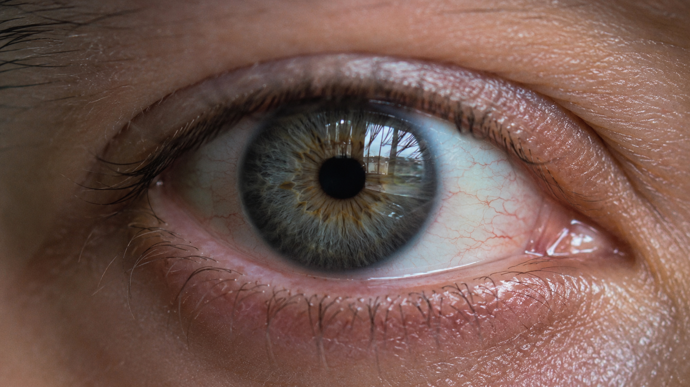

← BACK TO DOSSIERS LIST
REALISM CASE FILE // TREND: HOW TO FIX GLASSY AND LIFELESS EYES IN AI GENERATIONS
Film-Style Eye Macro Realism: Calibrating Iris Detail, Window Catchlights, and Camera-Grade Authenticity
DATE: 2026-07-18
STATUS: CALIBRATED_REALISM
ENGINE: CHATGPT DALL-E 3

SPECIMEN IMAGE #16:9 - CLEAN OPTICS
Macro eye imagery is one of the most over-optimized subjects in modern image generation. Many AI systems default to exaggerated sharpness, perfectly symmetrical iris patterns, and artificial reflections that look impressive at first glance but fail under closer inspection. A realistic eye photograph is defined less by maximum detail and more by the way information behaves: moisture, refraction, focus falloff, skin texture, and subtle asymmetries all contribute to photographic credibility.
In this calibration study, we break down the physical structure of a macro eye image through five layers of reality: Subject, Environment, Physics, Time, and Camera. Each layer contributes a different class of evidence that the image could have originated from a real optical system. However, the most important insight appears later in the workflow. The true secret behind camera-grade simulation is not merely visual description but language-level calibration. The calibration console at the end of the dossier reveals the lexicon shifts that separate generic prompts from physically plausible photographic instructions.
The lexicon shift process replaces aesthetic abstractions with observable phenomena. Terms such as "perfect eye detail" are transformed into descriptions of uneven iris fibers and localized softness. "Cinematic lighting" becomes window-driven daylight with practical bounce illumination. Technical calibration metrics prioritize optical behavior, refraction accuracy, tear-film reflections, natural depth transitions, restrained sharpening, and realistic sensor response. These substitutions reduce synthetic visual cues and increase the probability of generating images that behave like photographs rather than illustrations.
By returning to the original problem of repetitive AI aesthetics, we discover that realism emerges from physical constraints rather than visual exaggeration. The most convincing eye macro images preserve biological irregularity, optical imperfection, and documentary behavior. For creators who want a deeper calibration framework, the ALPHA REALISM methodology provides structured realism analysis, lexicon engineering, and film-style prompt design. The complete ALPHA REALISM Guide expands these principles into a repeatable system for building camera-grade image prompts with stronger observational authenticity.
The 5 Layers of Reality Applied
Subject:
Extreme macro close-up of a human eye showing a specific iris structure with irregular radial fibers, subtle color variation, natural pupil shape, faint scleral veins, uneven eyelid texture, fine eyelashes, realistic tear film, localized skin texture around the eye, slight asymmetry in eyelid tension, and catchlights reflecting a rectangular window frame without geometric perfection.
Environment:
Indoor daylight environment illuminated primarily by a nearby window, soft ambient bounce light from surrounding surfaces, gradual shadow transitions around the eyelids, realistic highlight clipping inside reflections, uneven luminance distribution, and natural exposure variation across skin, sclera, and iris.
Physics:
Window-frame reflections interacting with the curved corneal surface, tear-film specular highlights, optical refraction through the cornea, subtle moisture accumulation near the lower eyelid, realistic light scattering inside the iris structure, depth-dependent focus falloff, and physically plausible shadow behavior around eyelashes.
Time:
Minor skin fatigue, faint under-eye texture, microscopic dryness variation, natural biological irregularities, small dust particles potentially visible near eyelashes, slight redness variation in the sclera, and realistic signs of ordinary daily wear rather than cosmetic perfection.
Camera:
Macro lens perspective with shallow but imperfect depth of field, slight edge softness, realistic focus priority on the iris, minor optical inconsistencies, natural sensor grain, subtle chromatic aberration near high-contrast edges, moderate dynamic range, and documentary-style image processing without excessive sharpening.
The Lexicon Shift Table
| Appearance (Dead Adjective) |
|
Living Event (Cause & Effect) |
| perfect eye detail |
➔ |
iris fibers with uneven density, localized softness, and natural biological variation |
| cinematic lighting |
➔ |
window-driven daylight with practical ambient bounce and uneven luminance distribution |
| flawless skin |
➔ |
eyelid texture showing subtle pores, fine lines, and realistic tonal variation |
| crystal clear reflection |
➔ |
corneal reflection showing mild optical distortion from eye curvature |
| ultra sharp macro |
➔ |
focused iris detail with realistic depth falloff and peripheral softness |
| hyper realistic eye |
➔ |
observational eye capture preserving asymmetry, moisture variation, and natural imperfections |
Calibration Prompt Console
SUBJECT: macro close-up of a human eye, specific iris structure with irregular radial fibers, natural pigment variation, subtle scleral veins, realistic tear film, fine eyelashes, localized eyelid texture, slight asymmetry in eyelid tension, non-beautified biological appearance. ENVIRONMENT: indoor daylight near a window, practical ambient illumination, soft shadow transitions, realistic highlight clipping, uneven exposure distribution, natural bounce light from surrounding surfaces. PHYSICS: rectangular window frame reflected across the curved corneal surface, optical refraction through the cornea, specular highlights on the tear film, physically plausible light scattering within the iris, realistic eyelash shadow projection, depth-dependent focus behavior. TIME: ordinary daily appearance, faint skin fatigue, mild under-eye texture, slight scleral redness variation, subtle environmental dust traces, realistic biological wear. CAMERA: documentary macro photography, shallow but imperfect depth of field, focus prioritized on iris detail, slight edge softness, subtle chromatic aberration, natural sensor grain, moderate dynamic range, restrained sharpening, non-cinematic optical behavior, realistic image processing, camera-grade observational realism --ar 16:9
Do you want to generate precise AI images?
Unlock our alpha realism blueprint, physical reliable framework to get the best of your creations with the ALPHA REALISM Guide.
Download Ebook Now